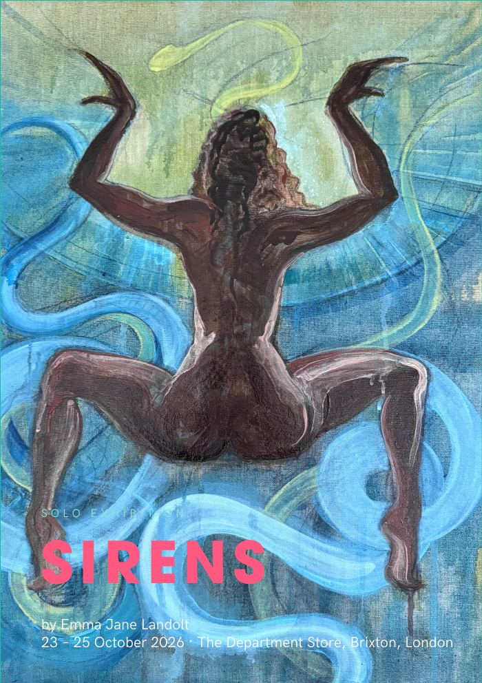
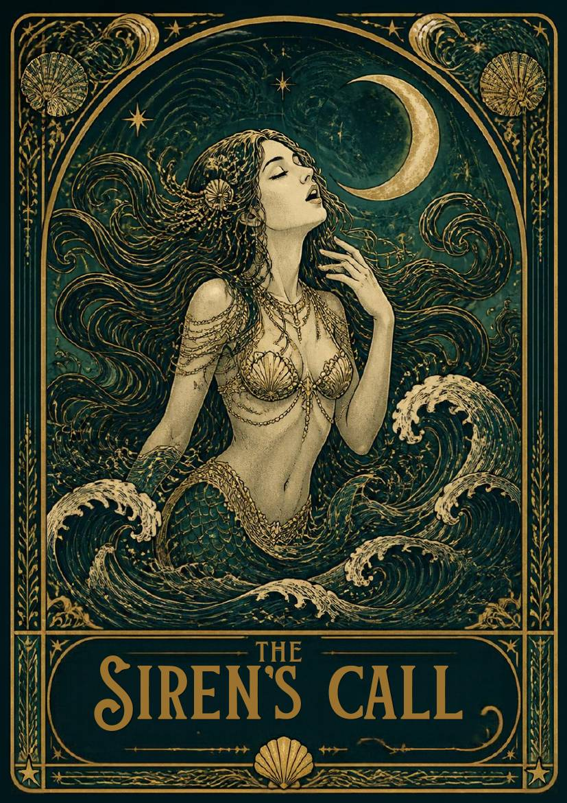
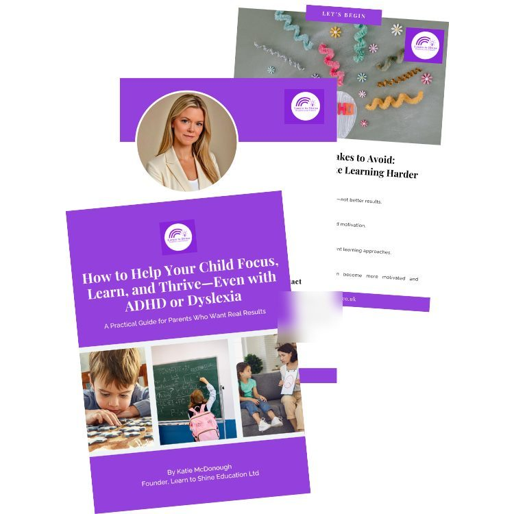
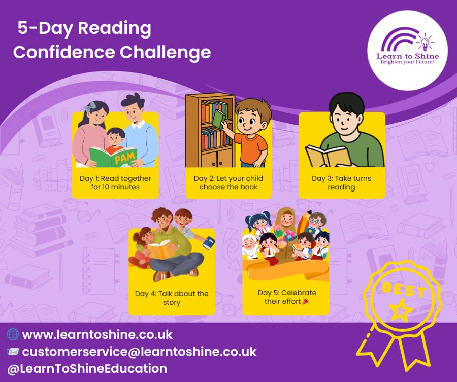
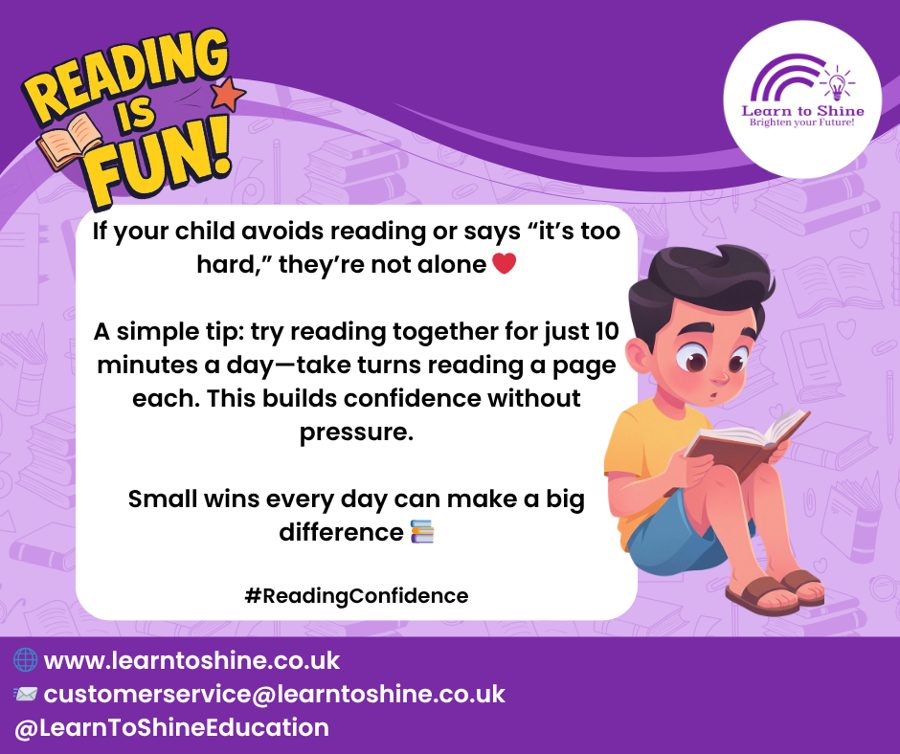
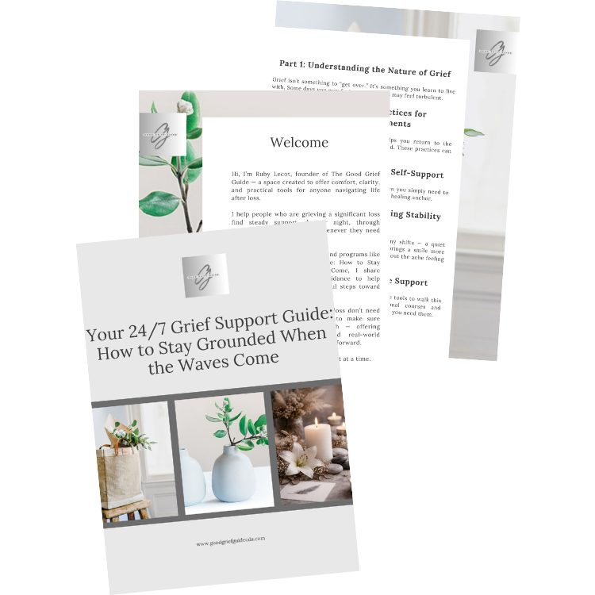
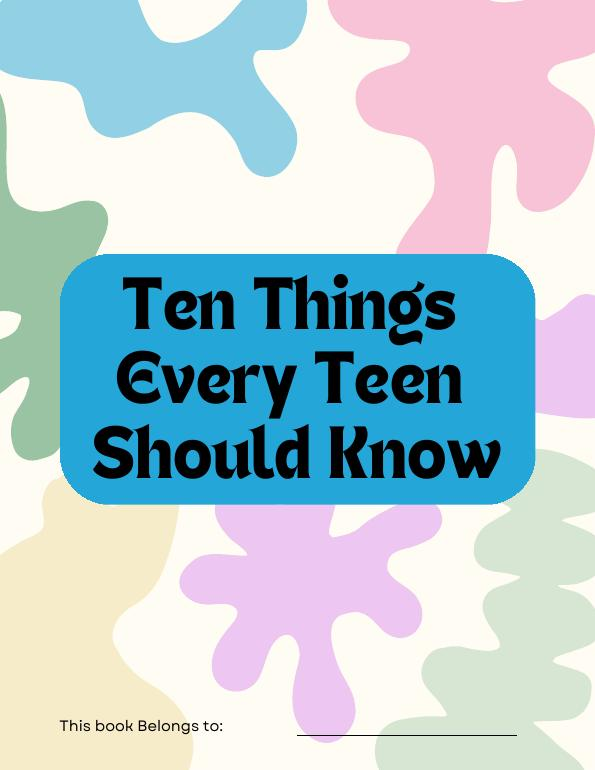

SIRENS Exhibition Catalogue
A 30-page catalogue for Emma's solo exhibition SIRENS (23–25 October 2026, London), with an artist statement, exhibition details, a works list and plates.
Digital VA Projects
Selected design and content work for three clients. Previews show the first page or a single sample only. To protect my clients' work and personal details, full files are shared on request using the Request More Samples buttons.
Sacred Space Studios is the creative and spiritual practice of artist Emma Jane Landolt, spanning original paintings, exhibitions, water-themed retreats and an oracle card deck.

A 30-page catalogue for Emma's solo exhibition SIRENS (23–25 October 2026, London), with an artist statement, exhibition details, a works list and plates.
A 9-page brochure for a retreat in Colombia (29 January – 5 February 2027), covering the venue, accommodation, daily practice, what's included and booking details.

A 104-page oracle deck file of sea-themed cards, each with a title and a short message of guidance.
Interested in seeing more of this work?
Request More SamplesLearn to Shine Education is a children's learning and tutoring business founded by Katie McDonough, offering parents practical guidance on reading and learning.

A promotional preview of a parent guide on helping children focus and learn, showing the branded cover, an author page and interior layouts.

A social media graphic that turns a five-day reading routine into five illustrated steps, with the logo and contact details in the footer.

A social post pairing a short parent tip with a friendly illustration and the #ReadingConfidence hashtag.
Interested in seeing more of this work?
Request More SamplesRuby Lecot is a counsellor, social worker and grief guide. Through The Good Grief Guide she offers comfort and practical tools for people navigating loss, alongside resources for teens.

A lead magnet mockup for a grief support guide, showing the cover and welcome pages in a calm, neutral style.

The cover of a ten-topic guide for teens, with a bold title panel over a colorful organic-shape background.
A 90-page deck of small landscape cards from the Good Grief Guide, pairing short messages on loss and healing with soft line illustrations.
Interested in seeing more of this work?
Request More Samples